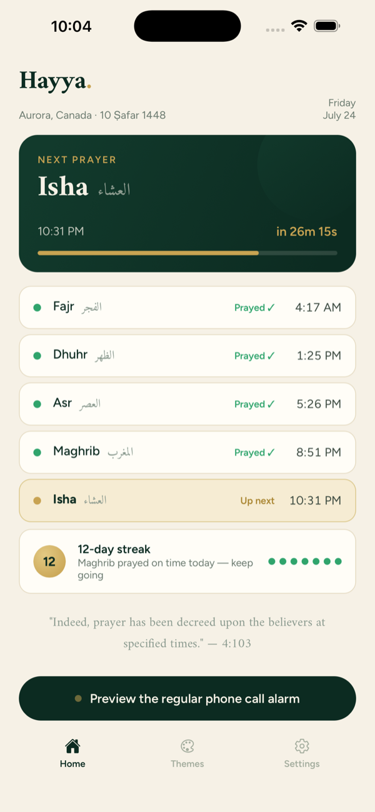
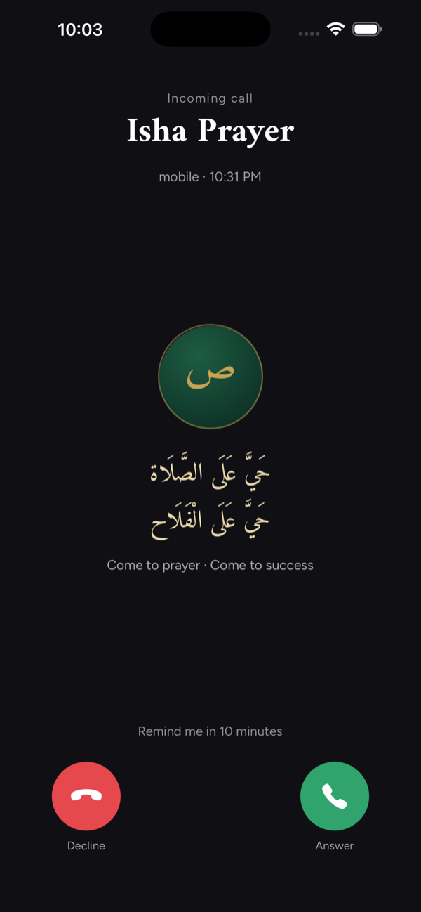
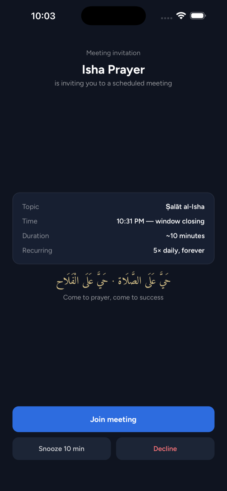
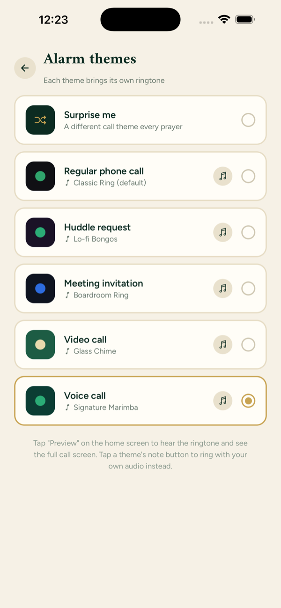
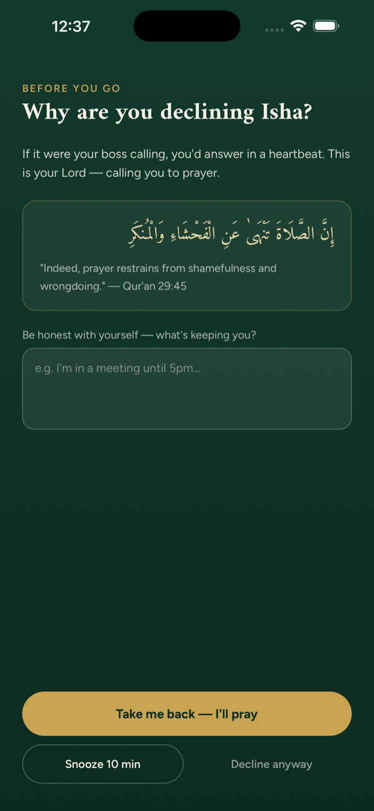
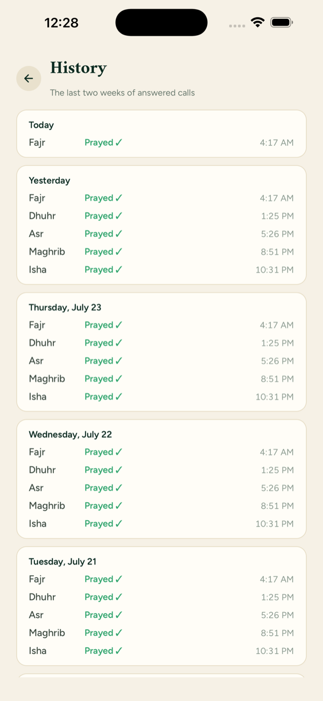

How it works
Three taps to set up. After that it comes to you.
Set your place and method
Use GPS or type your city, then pick from 12 calculation methods and standard or Hanafi Asr so the times match your masjid.
Your phone rings at salah
A full-screen incoming call with its own ringtone — Answer, Snooze, or Decline. Unanswered, it hangs up and calls back a few minutes later, again and again until the window closes.
Answer, and the streak grows
Answering logs the prayer and adds a day. Declining asks you to write down why. Letting one pass in silence resets the streak — no free passes.
Made to be a little uncomfortable
Hayya is for the person who already wants to pray on time and hasn't yet found the thing that makes it happen. If that isn't you, this probably isn't your app.
Which is why it doesn't let much slide. It rings like a call, and calls back until the window closes. Snooze works once. Declining takes more than a tap — you have to write down why, in your own words, and Hayya keeps what you wrote and shows it back to you later. A prayer you let pass in silence costs you your streak exactly as much as one you turned down. There are no free passes, and nothing here is designed to make missing a prayer feel neutral.
"Indeed, prayer has been decreed upon the believers at specified times." Qur'an 4:103
That small weight is the point. It isn't there to shame you — Hayya has no one to report you to, nothing to sell you, and no way to tell anyone what you wrote. It's there so the moment you decide to walk away from a prayer is a moment you actually notice, instead of one that slips quietly past. You can choose how firmly it speaks to you, gentle or firm. Either way, it will ask.
Nobody prays perfectly. The streak will break, and Hayya will go on calling anyway — because the next one is the one that matters.
See it
Screenshots from iPhone. Swipe to browse.






Prayer, answered
Five daily prayers, each announced like a call you can't ignore.
Call-style alarms
At each prayer time your phone rings full-screen like an incoming call, with its own ringtone. On Android the call takes over the lock screen; on iPhone it arrives as a time-sensitive call notification you tap to answer.
It calls back
An unanswered call rings, hangs up, and tries again a few minutes later — until you answer, decline, or the prayer window closes and it's logged as missed.
Times that match your masjid
12 calculation methods — ISNA, Muslim World League, Umm al-Qura, Egyptian, Karachi, Dubai, Kuwait, Qatar, Singapore, Diyanet, Tehran, Moonsighting Committee — plus standard or Hanafi Asr.
A streak you have to earn
Answering adds a day. Declining resets it to zero — and so does letting a prayer pass in silence. Tap the streak for a two-week history of every prayer and every reason you wrote.
Ring early when you need to leave
Set alarms to ring up to 30 minutes before the adhan so you reach the masjid on time — one lead time for all, or a different one for each prayer.
Snooze once, and only once
Snooze works a single time per prayer, then the button is gone. Declining takes more than a tap: you have to type an honest reason, with a gentle reminder of 4:103.
Your own ringtones
Every theme ships with its own tone, and you can replace any of them with an audio file from your device.
Made with care
Hijri dates you can nudge by up to two days to match your local sighting, adhan text in Arabic, English, or both, and reduce-motion and screen-reader support built in from the start.
Works with no signal
Prayer times are calculated on your phone, not fetched from a server, so Hayya keeps ringing on a plane, in the mountains, or in airplane mode.
Five ways to be called
Every prayer can arrive as a different kind of call, each with its own ringtone.
Every ringtone was synthesised from scratch for Hayya — no samples, no third-party audio.
Private, because there's nowhere for it to go
Hayya has no backend. There is no server to send your prayers to, and no account to attach them to.
No account
Open the app and start. No sign-up, no email, no profile.
No servers
Your location, settings, streak, and written reasons never leave your phone.
No analytics or ads
Nothing tracks what you do in the app, and there is nothing to sell you.
Yours to delete
Uninstalling Hayya removes every trace of it from your device.
Questions
The short answers. There are more on the support page.
Is Hayya free?
Yes — free to download, with no in-app purchases, no subscription, and no ads.
What do I need to run it?
An iPhone on iOS 16.4 or later, or an Android phone. The App Store listing is live now; the Android build is in testing.
Does it need internet?
No. Prayer times are calculated on your device from your coordinates, so everything works offline. You only need a connection if you want to look up a city by name.
Why does it ask for my location?
Prayer times depend on the sun's position, which depends on where you are. Hayya takes a single reading and computes the times on your phone — the coordinates are never sent anywhere. You can skip the permission entirely and type your city instead.
Will the alarm wake me for Fajr?
That's what it's built for. Alarms are exact and are rescheduled after a restart. On Android, Hayya walks you through the two system settings that stop the OS delaying alarms — "Alarms & reminders" access and a battery-optimization exemption.
Can I try the alarm without waiting for a prayer?
Yes. The Preview button on the home screen rings the full call, exactly as it will at prayer time. It's a dry run — it doesn't touch your log or streak.
What happens if I miss one?
A prayer whose window closes unanswered is logged as missed and resets the streak. If you actually prayed but forgot to log it, you can mark it as prayed on time from the history screen.
Come to prayer. Come to success.
Free, private, and offline. Five calls a day that are worth answering.
iPhone requires iOS 16.4 or later. The Android build is currently in testing.
More apps
Built for the same reason
A small family of free, private tools for everyday Muslim life. No accounts, no ads, no tracking — take whatever helps.
Learn Quran
Section-by-section memorization guides for Juz 29 and 30 — verified Arabic and translation, key vocabulary, memory hooks, a recitation guide, and drills to test yourself.
learn-quran.app →Lower Your Gaze
A quiet companion for guarding your gaze — a daily reminder, a check-in streak, a library of practical tactics, and a full-screen refuge for the moment an urge hits.
lower-your-gaze.vercel.app →HadithBot
A Discord bot that posts a hadith and one of Allah's 99 names to your server every day, with slash commands to pull one whenever you want.
Add to your server →Marketplace Du'a
A browser extension that gently reminds you of the du'a for entering the marketplace when you land on Amazon, eBay, or any shop you add yourself.
Get the extension →